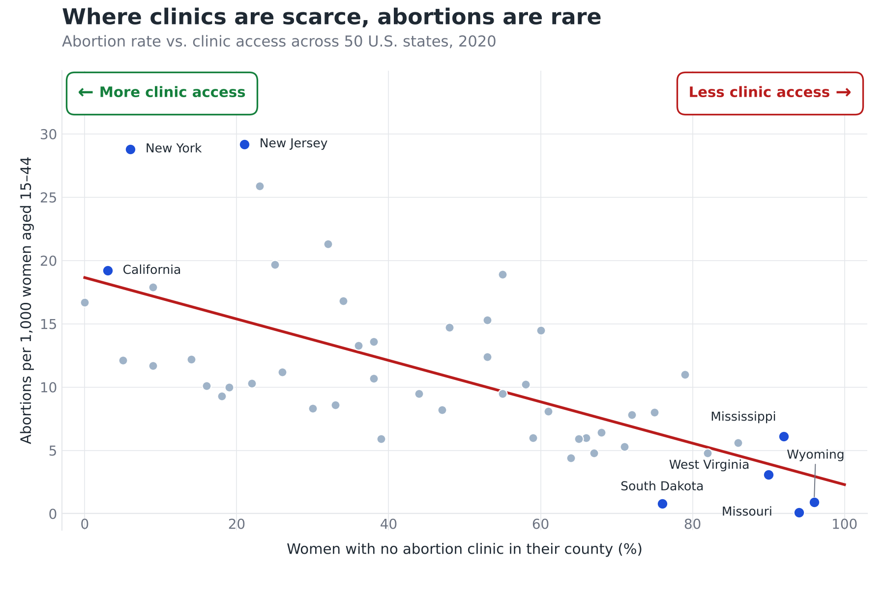

Proposition: States with fewer abortion clinics tend to have lower abortion rates.
FOR the Proposition

Design Decisions and Rationale:
- Measuring the rate by where the procedure took place (-1.0). The y-axis counts abortions performed in each state, divided by that state's resident women. Residents who travel out of state are counted in the state they travel to, so low-clinic states look lower and high-clinic states look higher. After feedback on our checkpoint, we added the axis wording “performed in-state” to specify how the rate is counted. We first scored this decision -1.5 and now score it -1.0, because the label discloses the definition. What worked: we choose the wording that doesn't mention travel between states and use technical terms instead of explain the definition in detail, careless readers may still be fooled by it . What it did not do well: in our first version the definition was not specified at all, and the TA flagged it, so we had to add the label, which makes the technique easier to spot. The alternative was the residence-based rate, which counts abortions obtained by a state's residents wherever they were performed (the measure our opposing chart uses). We rejected it because it adds back out-of-state procedures for low-clinic states, which works against the story this chart is meant to tell.
- Showing a rate per 1,000 women and no totals (-1.0). Dividing by resident women is a normal way to compare states of different sizes, but here it makes the number read as how many of that state's own women have abortions. New Jersey and New York sit near the top of the axis, and that is naturally read as residents' behavior rather than people coming in from other states. We deliberately do not show total counts or any comparison with residents, which would invite the question of where those procedures come from. What worked: the scatter is clean and comparable across states, and it keeps attention on the clinic-access trend instead of on state-to-state differences in procedure counts. What did not: a reader who wonders why a few states are so far above the rest gets no answer from the chart, and we cannot fully remove that question. The alternative was to plot totals, but then population would dominate and the clinic-access trend would be harder to see.
- Flipping the x-axis so more clinic access is on the right (+1.0). Our first version plotted the percentage of women with no clinic in their county, so the trend sloped downward and readers had to reverse “more is worse” in their heads. Following feedback on our checkpoint, we switched to the percentage of women living in a county with a clinic, so the trend line slopes upward and reads naturally as “more access, higher rate,” with color-coded direction labels to make the axis explicit. What worked: the pattern is immediate and the direction labels remove ambiguity. What did not: the original orientation confused readers, which is why the TA flagged it, and the new measure is still a proxy for the proposition's “number of clinics,” which the chart does not point out. The alternative was keeping the original orientation with annotation arrows, which we found more confusing.
AGAINST the Proposition

Design Decisions and Rationale:
- RATIONALE_1
- RATIONALE_2
- RATIONALE_3
Final Reflection
[WRITE FINAL REFLECTION PARAGRAPHS HERE.]